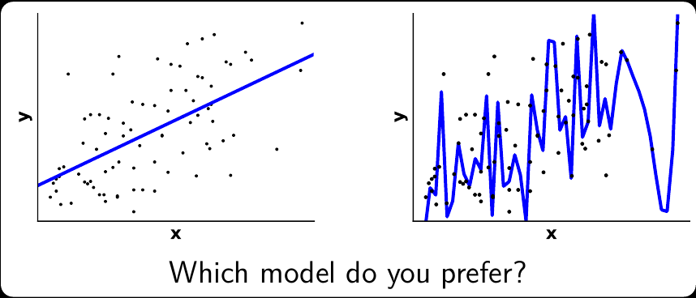
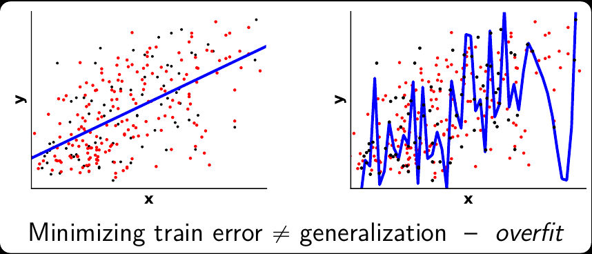
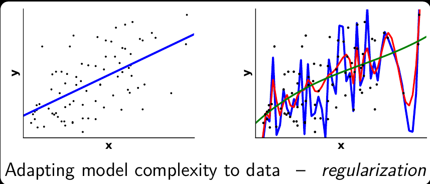
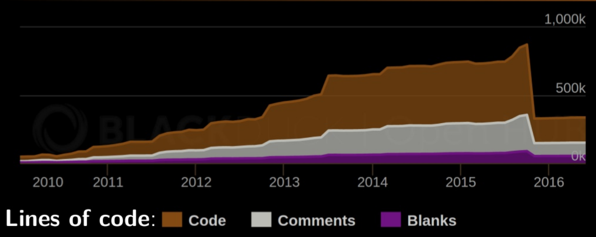
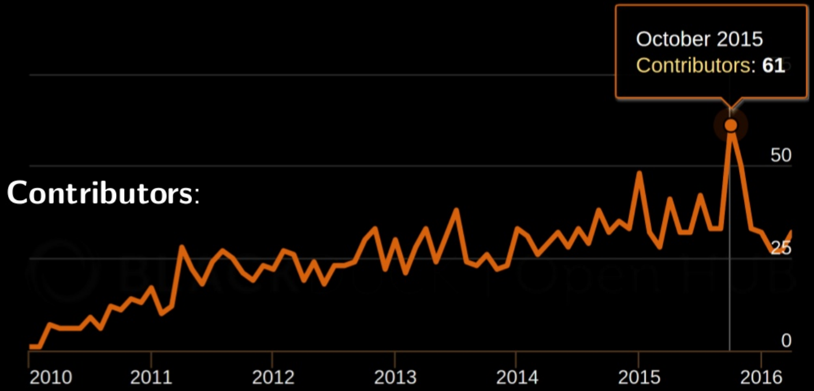
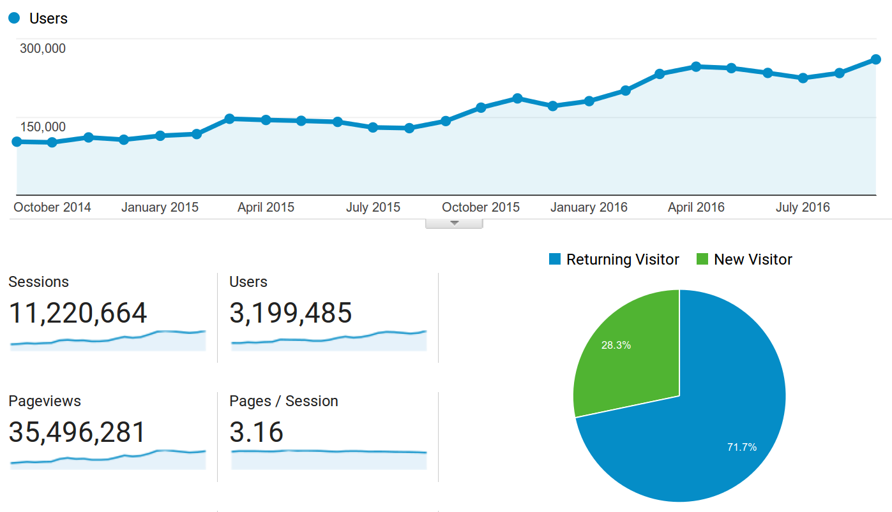
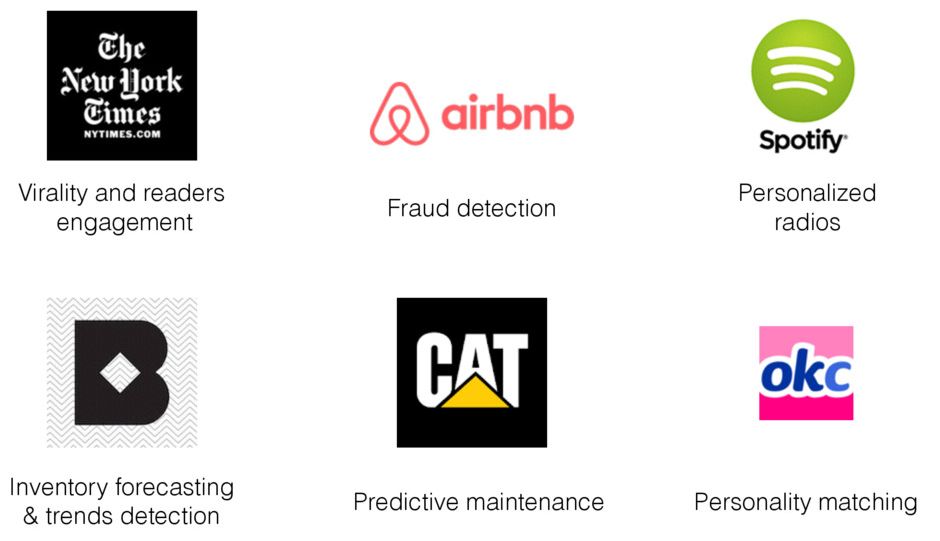

<!doctype html>
<html lang="en">

    <head>
        <meta charset="utf-8">

        <title>Scikit-learn</title>

        <meta name="author" content="Loïc Estève">

        <meta name="apple-mobile-web-app-capable" content="yes" />
        <meta name="apple-mobile-web-app-status-bar-style" content="black-translucent" />

        <meta name="viewport" content="width=200, height=device-height, initial-scale=1.0, maximum-scale=1.0, user-scalable=no, minimal-ii">

        <link rel="stylesheet" href="css/reveal.css">
        <link rel="stylesheet" href="css/theme/black.css" id="theme">

        <!-- Code syntax highlighting -->
        <link rel="stylesheet" href="lib/css/zenburn.css">

        <!-- Printing and PDF exports -->
        <script>
            var link = document.createElement( 'link' );
            link.rel = 'stylesheet';
            link.type = 'text/css';
            link.href = window.location.search.match( /print-pdf/gi ) ? 'css/print/pdf.css' : 'css/print/paper.css';
            document.getElementsByTagName( 'head' )[0].appendChild( link );
        </script>

        <!--[if lt IE 9]>
        <script src="lib/js/html5shiv.js"></script>
        <![endif]-->

        <style type="text/css">
        .reveal section img.border {
              margin: 15px 0px;
              background: rgba(255, 255, 255, 0.12);
              border: 4px solid #000;
              box-shadow: 0 0 10px rgba(0, 0, 0, 0.15);
        }

        .reveal section img {
            border: 0;
            box-shadow: 0 0 0 0;
            margin: 0 0 0 0;
        }

        .reveal span.cite {
            color: gray
        }

        .reveal .slides {
            text-align: left;
        }

        .reveal h1 {
            text-align: center;

        }

        .reveal h2 {
            text-align: center;
            margin-bottom: 50px;
        }

        </style>
        </head>

    <body>

        <div class="reveal">

            <!-- Any section element inside of this container is displayed as a slide -->
            <div class="slides">
            <section data-markdown data-separator="\n====\n"
                     data-separator-vertical="\n....\n" >
                <script type="text/template">

## Scikit-learn <!-- .element: style="text-align: center" -->

### Loïc Estève <!-- .element: style="text-align: center" -->
<div style="text-align: center; margin-top: 200px">
  
  
</div>

====

# Machine learning

....

## Machine learning (classification)

Big data isn't interesting without machine learning   <!-- .element class="fragment" -->


Example: telling apples from oranges  <!-- .element class="fragment" -->

<div class="fragment">
<span style="width: 200px; display: inline-block">Learning from data</span>

</div>

<div class="fragment">
<span style="width: 200px; display: inline-block">Predicting on new data</span>

</div>

Learn as much as possible from the data but not too much <!-- .element class="fragment" -->
....

## Machine learning (regression)



....
## Machine learning (regression)



....
## Machine learning (regression)



====

# Scikit-learn

....

## Vision: an enabler

* Machine learning for everyone
* High quality pythonic library
* Community-driven development

<center></center> <!-- .element style="margin-top: 100px" -->

....

## Code and contributors

<center>




https://www.openhub.net/p/scikit-learn
</center>

....

## Website users



....

## Users (industry)



....

## Users (academia)

In Parietal: decode activity of the brain recorded via fMRI

Used widely in: astronomy, particle physics, genomics, etc ...

<!-- TODO: Add academia-like things with plots from brain imaging??? -->

....

## Scikit-learn strong points

<div>
Easy to use:

```python
from sklearn import svm
classifier = svm.SVC()
svm.fit(X_train, y_train)
y_test = classifier.predict(X_test)
```
</div> <!-- .element class="fragment" -->

Consistent API for estimators <!-- .element class="fragment" -->

Optimised for speed: Numpy and Cython <!-- .element class="fragment" -->

Great documentation <!-- .element class="fragment" -->

<div>
Examples gallery (via [sphinx-gallery](https://sphinx-gallery.readthedocs.io/)):<br/>
http://scikit-learn.org/stable/auto_examples/index.html
</div> <!-- .element class="fragment" -->

====

## Getting started

Python: Anaconda + `conda update scikit-learn`

IDE: PyCharm

Scientific Python: [scipy-lecture-notes.github.io](scipy-lecture-notes.github.io)

Documentation: [scikit-learn.org](scikit-learn.org)

Examples: [scikit-learn.org/stable/auto_examples](scikit-learn.org/stable/auto_examples)

Jupyter notebooks useful for exploratory data analysis

====

## Demo

Jupyter notebook: predicting house prices on Boston housing dataset

====

## Summary

* Rich feature set of battle-tested functionalities
* Consistent API: quick and easy prototyping
* Great documentation
* Standing on the shoulders of strong scientific Python ecosystem

<center></center> <!-- .element style="margin-top: 100px" -->

====

====

## Combining models

```python
from sklearn.preprocessing import StandardScaler
from sklearn.decomposition import RandomizedPCA
from sklearn.svm import SVC

scaler = StandardScaler()
X_train_scaled = scaler.fit_transform(X_train)

pca = RandomizedPCA(n_components=10)
X_train_pca = pca.fit_transform(X_train_scaled)

svm = SVC(C=0.1, gamma=1e-3)
svm.fit(X_train_pca, y_train)
```

====

## Pipeline

```python
from sklearn.preprocessing import StandardScaler
from sklearn.decomposition import RandomizedPCA
from sklearn.svm import SVC
from sklearn.pipeline import make_pipeline

pipeline = make_pipeline(
    StandardScaler(),
    RandomizedPCA(n_components=10),
    SVC(C=0.1 ,gamma=1e-3))
pipeline.fit(X_train, y_train)
```

====

## Scoring manually stacked models

```python
scaler = StandardScaler()
X_train_scaled = scaler . fit_transform(X_train)

pca = RandomizedPCA(n_components = 10)
X_train_pca = pca . fit_transform(X_train_scaled)

svm = SVC(C = 0.1 , gamma = 1e-3)
svm.fit(X_train_pca, y_train)

X_test_scaled = scaler.transform(X_test)
X_test_pca = pca.transform(X_test_scaled)
y_pred=svm.predict(X_test_pca) accuracy_score(y_test, y_pred)
```

====

## Scoring a pipeline

```py
pipeline = make_pipeline(
    StandardScaler(),
    RandomizedPCA(n_components=10),
    SVC(C=0.1 ,gamma=1e-3))

pipeline.fit(X_train, y_train)
y_pred = pipeline.predict(X_test)
accuracy_score(y_test, y_pred)
```

====

## Parameter search

```py
import numpy as np
from sklearn.grid_search import RandomizedSearchCV

params = {'randomizedpca__n_components' : [5 , 10 , 20],
          'svc__C' : np.logspace(- 3 , 3 , 7),
          'svc__gamma' : np.logspace(- 6 , 0 , 7)}

search=RandomizedSearchCV(pipeline, params, n_iter=30 , cv=5)
search.fit(X_train, y_train)
# search.best_params_, search.grid_scores_
```

<!-- ## The end -->

<!-- <div style="text-align: middle"> -->
<!-- Thanks for your attention !<br><br> -->
<!-- Questions? -->
<!-- </div> -->
                </script>
            </section>

            </div>
        </div>

        <script src="lib/js/head.min.js"></script>
        <script src="js/reveal.js"></script>

        <script>

            // Full list of configuration options available at:
            // https://github.com/hakimel/reveal.js#configuration
            Reveal.initialize({
                controls: true,
                progress: true,
                history: true,
                slideNumber: true,
                transition: 'none', // none/fade/slide/convex/concave/zoom

                width:1024,
                height:768,

                // Optional reveal.js plugins
                dependencies: [
                    { src: 'lib/js/classList.js', condition: function() { return !document.body.classList; } },
                    { src: 'plugin/markdown/marked.js', condition: function() { return !!document.querySelector( '[data-markdown]' ); } },
                    { src: 'plugin/markdown/markdown.js', condition: function() { return !!document.querySelector( '[data-markdown]' ); } },
                    { src: 'plugin/highlight/highlight.js', async: true, condition: function() { return true; }, callback: function() { hljs.initHighlightingOnLoad(); } },
                    { src: 'plugin/zoom-js/zoom.js', async: true },
                    { src: 'plugin/notes/notes.js', async: true },
                    { src: 'plugin/math/math.js', async: true }
                ]
            });

        </script>

    </body>
</html>
